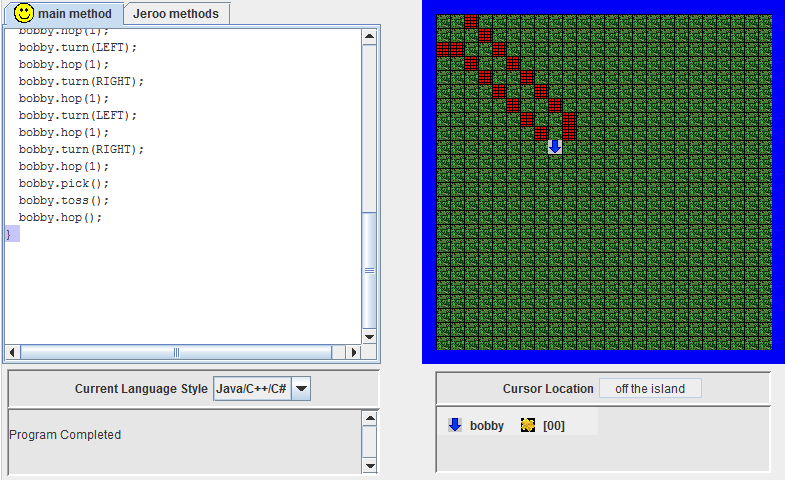

Jeroo Content
Unit 1
Fenced In

In this lab we were required to navigate the Jeroo through the nets and for extra credit we could use a flower to help the jeroo escape. This was the first lab that we solved using jeroo. Through this lab we became familiar with the jeroo setup.
Concepts Learned
- How to hop
- How to turn the Jeroo
- Extra Credit: pick and toss a flower to clear the net
Nets
This lab taught me how to use Jeroo actions such as toss, plant, pick, and hop. The jeroo had to pick flowers in order to clear all the nets. This was to get us familiar with all the actions and jeroo could do as well as how to debug my coding.
Concepts Learned
- Jeroo actions: hopping, turning, picking, tossing flowers
Unit 2
Great Escape
The Great Escape lab was made to help us learn how to use methods. We can create methods that all jeroos can use and it makes coding a lot more clean and organized. Using one method I was able to help all four jeroos escape.
Concepts Learned
- How to apply methods to all jeroos
- Jeroo actions practiced: tossing flowers
- Face a specific direction at the end
LED
The LED lab was designed to make us more familiar with calling methods multiple times and following preconditions. We were required to created methods for writing out the numbers 1-9 with flowers in the methods section. Then in the main method we spelled out the last three digits of our phone number.
Concepts Learned
- How call methods within methods
- How to efficiently use methods
Unit 3
Pinball
Pinball was a difficult because we were suppose to have the jeroo search the entire island and pick all the flowers using loops. The requirement though, was that the jeroo had to stop and the edge of the island in the end without jumping into the water. In the end I figured out how to stop the jeroo with if statements.
Concepts Learned
- How to use while loops
- How to use if conditions
- Different boolean methods
Water Hazzards
In water hazzards we had to create a method that plants flowers around the lakes. Then we had to create another one that would find all the lakes on the island. I could not find a way to surround all the lakes with only one jeroo so I used four jeroos.
Concepts Learned
- If/else statements
- Practiced making statements that work for all jeroos no matter the location
- How to stop the loops
Unit 4
Spiral Maze
In this lab we had to find a way to use loops and if statements to have the jeroo navigate any maze it is given. Post conditions are that it has to stop and the end of the maze. I used recursion to make sure the jeroo was facing the path at all times.
Concepts Learned
- How to use recursive
- How to use recursion inside and if or while statement
Alley Run
In Alley Run we had four conditions that needed to be met:
- All flowers need to be picked
- All nets replaced with flowers
- Plant flowers across each stretch of water
- Stop when it is not clear ahead anymore
Concepts Learned
- Creating a solution tailored to the problem
- Recall if statements more than once using recursion
- Debugging and checking my coding